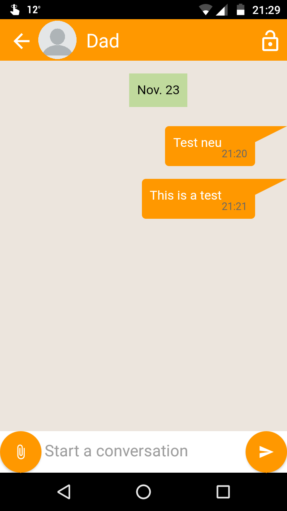

My open source password checker app to show off what thunkable is capable of. You find the finished app in the Google Play Store. All sources can be found in its GitHub repo. You can help translating! Details can be found here.
Work in progress. It uses HTML and CSS to generate the chats and Firebase to communicate with the cloud. There are now three subprojects with
different aims which you find all in the project's GitHub repository.

Displays a list that is created from a remote database. The list is cached and updated every time there is an internet connection.
A click on a list item brings the user to a with more information. The project is designed to be a boilerplate for experienced developers.
Supports Airtable and Cloudstitch databases.
Link
The project loads location data from a remote database and diplays them on a map. When the user selects a marker, additional information
will be displayed. The project is designed to be a boilerplate for experienced developers. Supports Airtable and Cloudstitch databases.
Thunkable Classic version
App Inventor version
A simple music player that supports playlists, repeat and shuffle. Multiple languages are supported.
Link